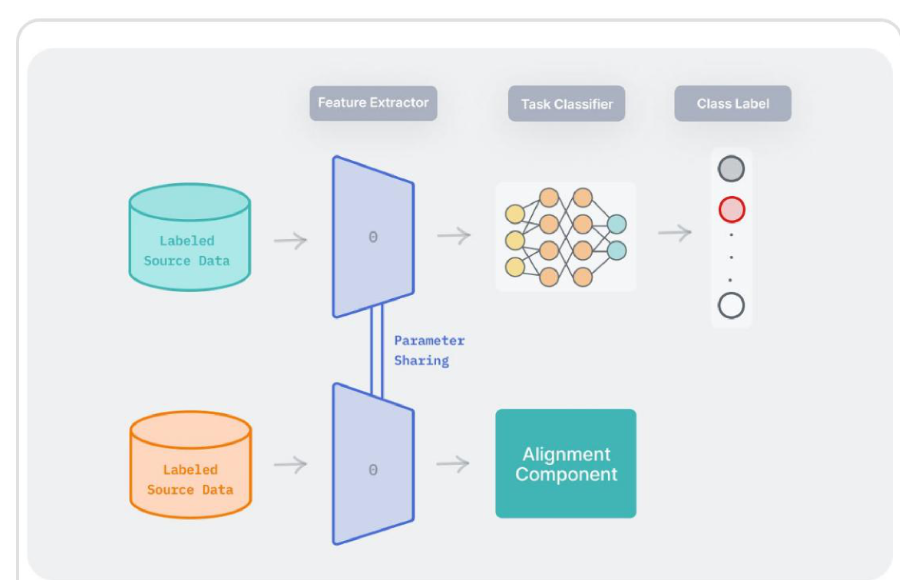

Feature Extractor
Source/Target 공통 특징 추출

Adversarial Learning 기반 구조
Domain classifier를 속이는 방식으로
Domain-invariant feature를 학습합니다.
Domain-invariant feature를 학습합니다.
F
L
Label Predictor
Source 데이터 기반 분류
Source 데이터 기반 분류
D
Domain Classifier
입력이 어느 도메인인지 판별
입력이 어느 도메인인지 판별
핵심
GRL을 통해 feature extractor는 domain classifier를 혼란시키도록 학습되며,
결과적으로 Domain에 독립적인 표현을 생성합니다.
GRL을 통해 feature extractor는 domain classifier를 혼란시키도록 학습되며,
결과적으로 Domain에 독립적인 표현을 생성합니다.